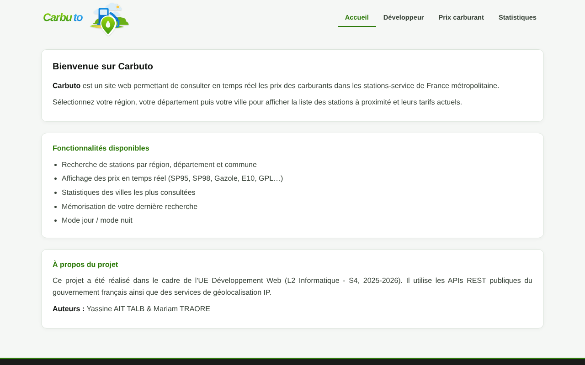
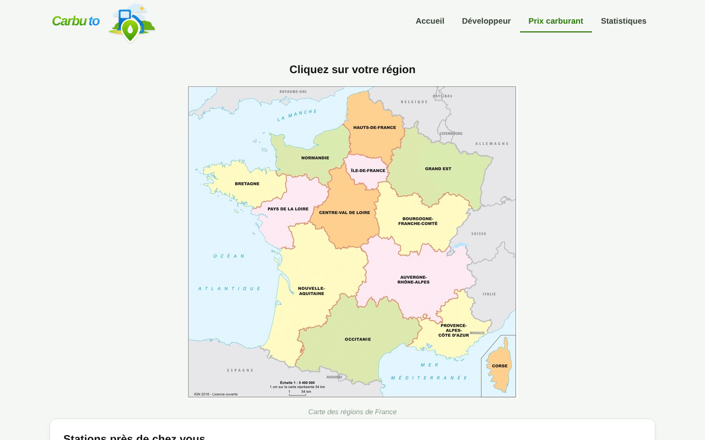
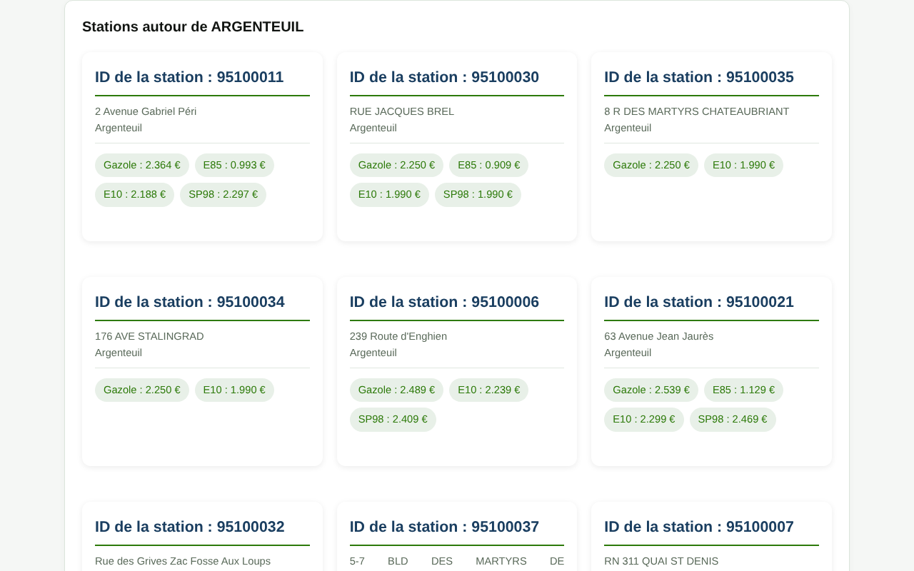
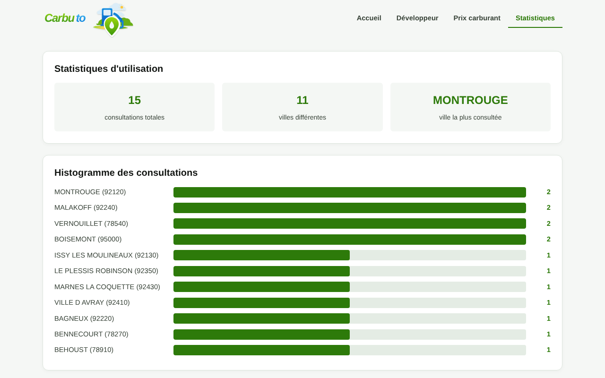
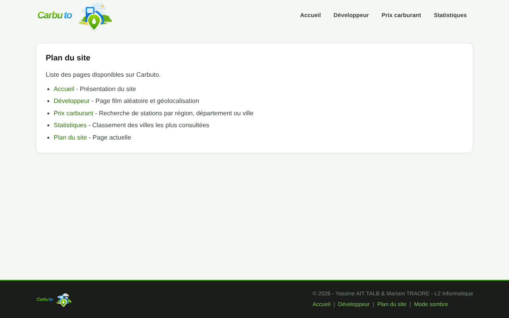
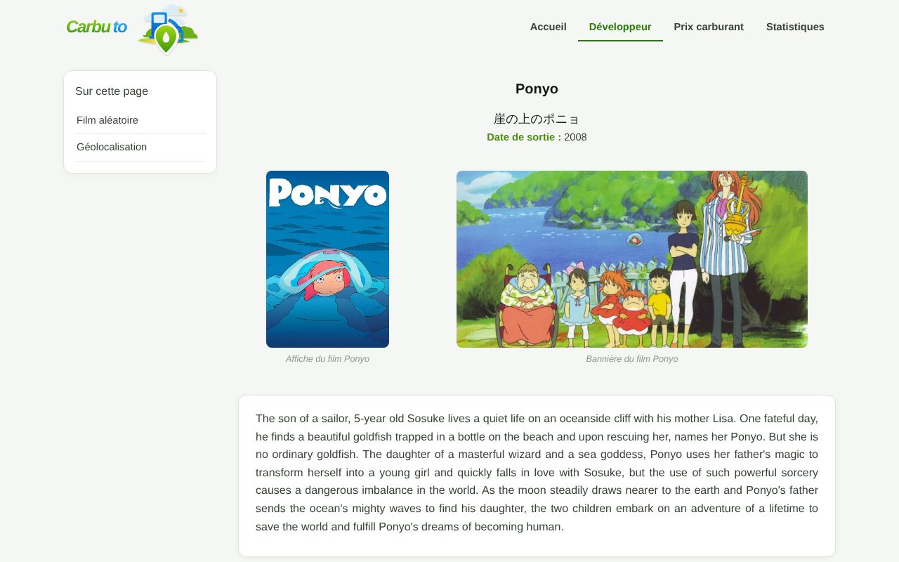
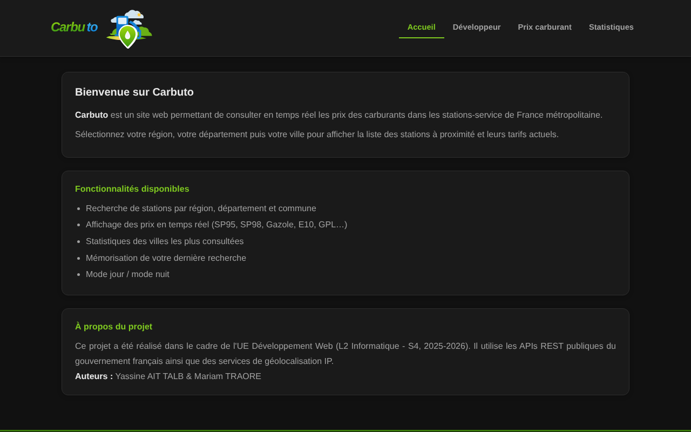
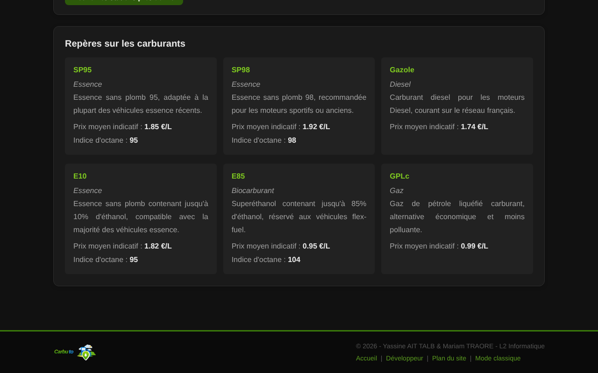

Projets / Carbuto
Carbuto
Comparateur de prix des carburants
- Cours
- Développement web, L2 Informatique (S4)
- Année
- 2025-2026
- Équipe
- Avec Mariam Traore
- Statut
- Terminé
 PHP 8
PHP 8- HTML/CSS
- API REST
- JSON
- XML
- CSV
 Git
Git
L'objectif
Carbuto permet de consulter les prix des carburants dans les stations-service de France métropolitaine. On choisit une région sur une carte, puis un département et une ville, et le site affiche les stations avec leurs prix, mis à jour en temps réel par l'API publique du gouvernement.
Le site devait mettre en œuvre tout le programme de l'UE : pages HTML structurées, CSS, PHP côté serveur, appels à des API au format JSON et données stockées dans des fichiers.
Les fonctionnalités
- Parcours région, département, ville. La carte des régions est une image cliquable ; les listes de départements et de villes sont filtrées en PHP à partir de trois fichiers CSV.
- Prix en temps réel. Le serveur construit l'URL de l'API des prix des carburants (data.economie.gouv.fr) à partir du code postal ou du département, décode le JSON et affiche chaque station avec ses prix.
- Stations près de chez moi. Un bouton géolocalise l'adresse IP du visiteur avec l'API IP2Location et lance la recherche sur son code postal.
- Repères sur les carburants. Un fichier XML décrit chaque carburant (type, prix moyen indicatif, indice d'octane), lu avec SimpleXML.
- Statistiques de visites. Chaque recherche de ville est ajoutée à un fichier historique.csv avec la date ; la page Statistiques compte les consultations, trace un histogramme en barres et classe les villes avec leur département et leur région.
- Page Développeur. Un film du Studio Ghibli tiré au hasard depuis une API (avec un fichier JSON local en secours) et la position géographique du visiteur.
- Deux thèmes et des cookies. Thème classique ou sombre, et dernière ville consultée, mémorisés dans des cookies.
- Clé d'API hors du code. La clé IP2Location est lue dans un fichier .env, absent du dépôt.
- Documentation. Le code PHP est documenté avec Doxygen.
Architecture du site
Captures
Captures réelles du projet. Cliquez sur une image pour l'agrandir ; flèches pour naviguer, Échap pour fermer.
















Mon rôle
Je me suis occupé de la page d'accueil, du plan du site, de la page de film aléatoire, des statistiques de visites avec le diagramme, et de la localisation des visiteurs par adresse IP avec l'API IP2Location.
Mariam Traore a réalisé le reste, dont la recherche des stations et l'affichage des prix.
La difficulté
Un même code postal peut correspondre à plusieurs communes, ce qui faussait certaines villes dans les statistiques.
Ce que j'ai appris
J'ai appris à utiliser une API REST externe (IP2Location) et à ne jamais laisser une clé d'API dans le code.